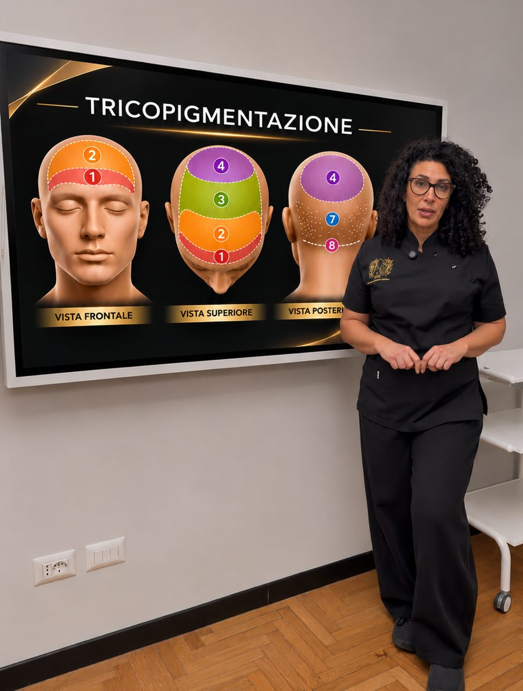
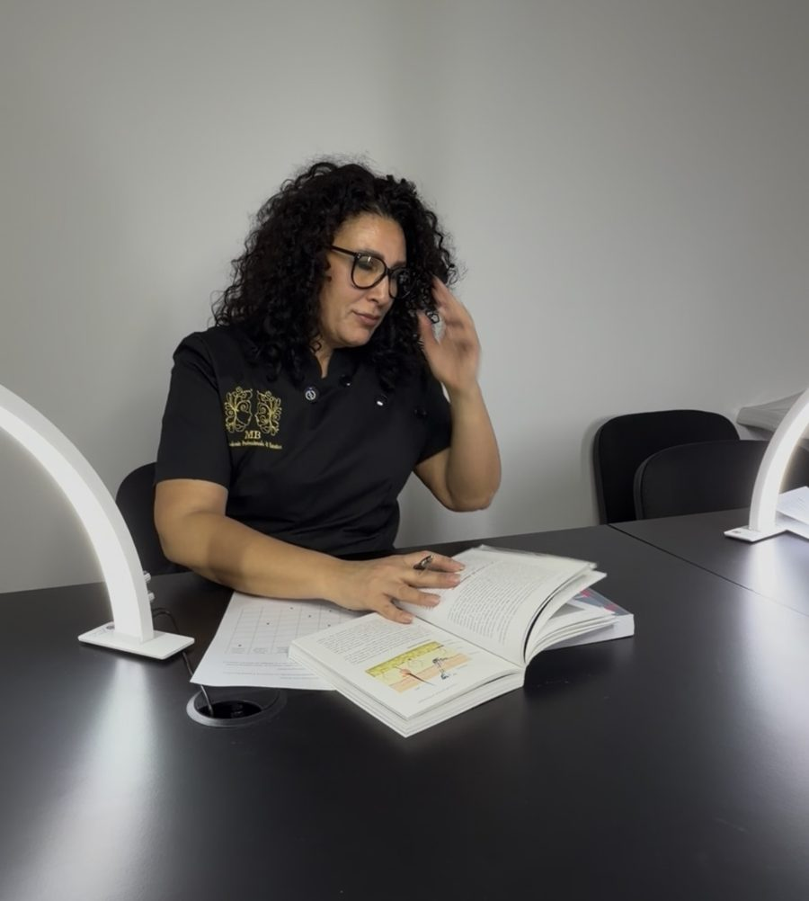

Sono docente di tricopigmentazione presso MB Accademia, accreditata dalla Regione Lazio.
Il corso di Operatore delle attività di tatuaggio, di almeno 800 ore, è il percorso regionale che qualifica per lavorare nel trucco permanente, nella dermopigmentazione, nella tricopigmentazione e nel tatuaggio artistico, con il superamento dell’esame finale.[1][3]
Il mio modulo di tricopigmentazione è di 80 ore nel percorso abilitante riconosciuto: circa dieci giornate da otto ore, contro i due o tre giorni dei corsi privati. Tra le materie del corso: tricopigmentazione, dermopigmentazione e tatuaggio artistico.
Insegno a osservare, progettare e controllare la tecnica: le basi per capire come si costruisce un trattamento e per esercitare la manualità.
L’eccellenza nasce dalla capacità di osservazione.
Il mio profilo di docente è verificabile sul sito di MB Accademia.[5]


Il modulo di tricopigmentazione è di 80 ore sulle 800 complessive del corso: circa dieci giornate da otto ore, contro i due o tre giorni dei corsi privati. Unisce teoria, progettazione ed esercitazioni tecniche, per sviluppare conoscenze, capacità di osservazione e basi tecniche, con attenzione alla precisione del gesto e alla costruzione del trattamento.
La qualifica è il requisito formativo per l’esercizio dell’attività: l’apertura di uno studio richiede anche gli adempimenti amministrativi e i requisiti sanitari e dei locali applicabili.[2]
Un corso tecnico privato può essere utile per perfezionarsi, ma da solo non sostituisce la qualifica per chi non possiede già il requisito professionale: conta il conseguimento della qualifica nel percorso autorizzato, non la sola frequenza del modulo.[3]
Il percorso comprende anche anatomia e fisiologia cutanea, sicurezza delle miscele e prevenzione delle complicanze, primo soccorso, igiene e sicurezza sul lavoro, comunicazione con il cliente, privacy, diritto, gestione d’impresa e inglese di settore.[3]
Fonte: Regione Lazio, DGR 270/2022.
Nel Lazio, chi vuole lavorare nel trucco permanente (PMU), nella dermopigmentazione, nella micropigmentazione o nella tricopigmentazione deve seguire il percorso regionale di Operatore delle attività di tatuaggio: almeno 800 ore, presso un ente autorizzato dalla Regione, con esame finale. È un requisito indispensabile per esercitare in regola.[3]
Il percorso spesso non è chiaro, così ho scritto una guida con requisiti, struttura del corso, esame e i controlli da fare prima di iscriversi.
Il costo dipende dal tipo di corso e dall’ente. Il percorso regionale di 800 ore, con il modulo di tricopigmentazione di 80 ore, ha costi e calendari che si chiedono direttamente a MB Accademia, accreditata dalla Regione Lazio. Un corso privato di due o tre giorni ha invece un altro impegno e non sostituisce la qualifica regionale.
Nel Lazio serve la qualifica di Operatore delle attività di tatuaggio, che si ottiene con il percorso regionale di almeno 800 ore e l’esame finale. Per verificare casi particolari, come crediti o altre qualifiche, ci si rivolge alla Regione o all’ente di formazione.
Il percorso regionale è di almeno 800 ore. Il modulo di tricopigmentazione che tengo io è di 80 ore, circa dieci giornate da otto ore.
Presso MB Accademia, a Roma, accreditata dalla Regione Lazio, nel corso di Operatore delle attività di tatuaggio.
Il percorso è rivolto anche a chi parte da zero, purché possieda i requisiti di accesso. L’Accademia verifica l’ammissibilità e fornisce le informazioni per l’iscrizione.
Calendario, costi, requisiti di accesso e iscrizioni vanno richiesti direttamente a MB Accademia.
MB Accademia, Via Genova 23, Roma.
Verifica l’autorizzazione di MB Accademia (PDF Regione Lazio) (si apre in una nuova scheda)
Determinazione G01377 del 6 febbraio 2026.
Documenti consultati il 4 ottobre 2026.